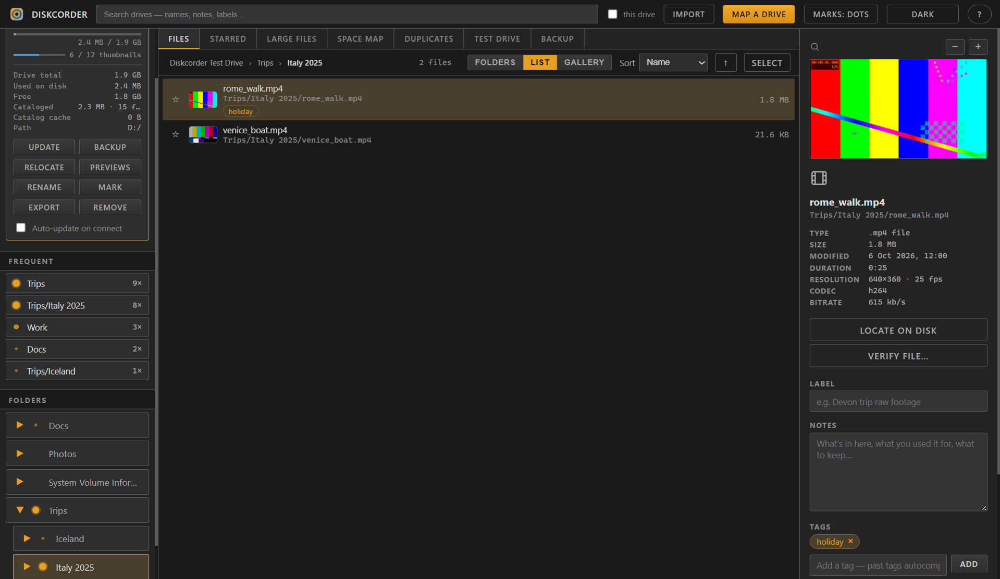
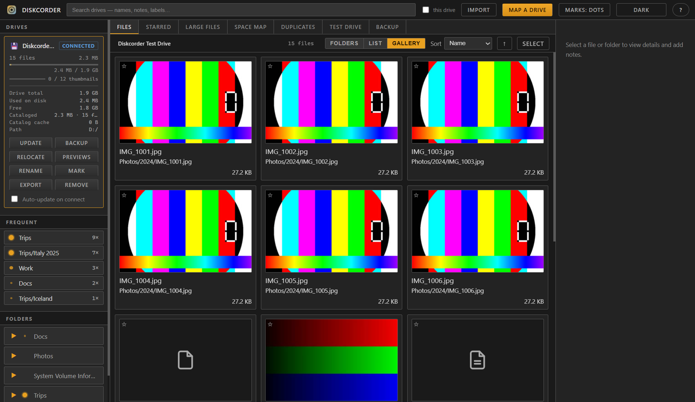

Know what's on every drive,
even when it's unplugged.
Diskcorder maps your USB and external drives once, then lets you browse, search, annotate and rename everything offline. Free, open source, and nothing ever leaves your computer.
Installer or portable .exe · MIT licensed · Windows 10/11

"Which drive has the Italy footage?"
If your work lives on a shelf of USB hard drives, answering that means plugging in disks one by one. Diskcorder keeps a searchable map of every drive, plus your own notes and labels, in one local file.
How it works
Three steps, and the drive can go back on the shelf.
Map a drive
Plug it in, give it a name and let Diskcorder scan every file and folder. Pause or cancel any time.
Browse & annotate
Add notes, labels and tags. Generate thumbnails for videos and images with one click.
Search anywhere
Find any file across all your drives — with the drive unplugged. It tells you which drive and folder.
Everything you need to keep drives under control
Built for people with a lot of footage, photos and archives spread over many disks.
Offline catalog
Browse a drive's full tree while it's disconnected. A live connected / offline badge shows what's plugged in.
Cross-drive search
Search names, notes, aliases and tags across every mapped drive at once, or scope it to one.
Smart thumbnails
Video stills skip black intros and blurry frames. Hover a video to play a short preview clip.
Space map
A colored treemap shows what's eating space. Click a folder to drill in.
Duplicates
Find repeated files across drives, see how much space is reclaimable, and bulk-delete the extras — always keeping one copy.
Test Drive
Verify a drive's real capacity to catch fake USB sticks, and test individual files for damage.
Backup & copy
Additive backup between drives that never deletes at the destination, plus copy/move with progress and conflict handling.
Notes, labels & tags
Give files friendly names without touching the disk, or rename for real when the drive is connected. Click a tag to list everything with it.
Remembers where you go
Folders you open often get a mark that grows with use, and a Frequent list gives you one-click shortcuts.
Folders, list or gallery
Switch how you look at a drive in one click. Sort by name, size, date, label or tag, and load huge folders incrementally as you scroll.
- Folders — the familiar tree, with a folder tree in the sidebar.
- List — flat filenames with clickable locations.
- Gallery — a grid of large thumbnail cards.
- Large files — find the biggest files to clear first.

Local-first, by design
Your catalog is a single SQLite file on your machine. There are no accounts, no cloud and no telemetry — nothing is ever uploaded. Export a drive's catalog (with notes, tags and thumbnails) to a file and import it on another computer, or save it on the drive itself.
Questions
Short answers.
Is it really free?
Yes. Diskcorder is open source under the MIT license — free to use, modify and share. The source is on GitHub.
Windows says "unknown publisher" when I run it. Is that safe?
That's Windows SmartScreen, which warns about apps that aren't code-signed yet. You can verify the code on GitHub and build it yourself. Choose "More info → Run anyway" to continue.
Which should I download — Setup or Portable?
The Setup installs Diskcorder like any other app. The Portable build is a single .exe you can run without installing, from a USB stick if you like. It keeps its catalog and thumbnails in a DiskcorderData folder next to the .exe (the Setup version uses your user profile).
Does it change or upload my files?
No upload, ever. Scanning only reads. Files are changed only when you explicitly rename, copy, move, back up or delete something with the drive connected, and destructive actions ask for confirmation.
Do I need ffmpeg?
It's bundled (a GPL-licensed FFmpeg build, run as a separate program; see third-party notices). It's used for thumbnails, preview clips and media info; without it the app still runs, just without those.
Can I use my catalog on another computer?
Yes. Export a drive's catalog (notes, tags and thumbnails included) and import it elsewhere — it stays browsable even if that machine has never seen the drive.
Map your first drive in a minute
Download Diskcorder, plug in a drive, and stop playing "which disk was it on?"